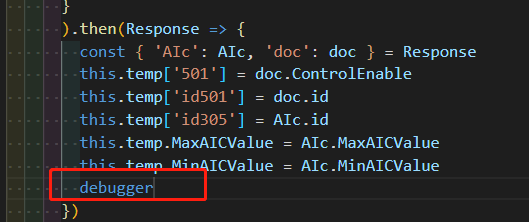
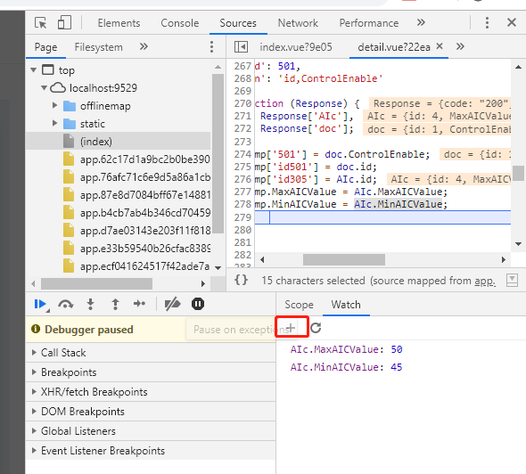

因为程序的调试非常重要，程序猿可以利用好的调试方法去查找定位自己的问题所在之处。从而，达到纠正自己程序错误的地方，健壮自己的程序，让问题变得越来越少，程序变得越来越健康。故作此文，而且日后会将实用的调试程序方法不断进行迭代更新。
调式与测试实际有异曲同工之妙，只不过对象不同。测试面向的是产品级，系统级；而调试往往是程序里的某一部分，某个方法，某个属性或者对象。最终效果也很类似，好的测试人员，测试方案可以将产品系统的问题解决在摇篮中；好的调试方法也会让你对程序的运行理解很深刻，对问题的查找定位变得很容易，让软件运行得更稳定。
在代码中添加console.log()方法，这里例子输出从数据库读回来的最高最低温，详见如下：
在Google浏览器中按F12，调出Console窗口如下。
将代码改成Error输出如下
则浏览器的Console输出会变成红色如下。
如果输出的是一个JS对象或者数组，则需要用JSON.stringify方法将其转换成json数组再输出,如下
console.log(JSON.stringify(resolve));
备注：alert方法为阻塞式，点击确定之后，前端代码才会继续运行
设置断点debugger如下图

则运行代码之后，代码会自动跳到断点，停止运行如下
Watch中点“+”,然后点击回车即可，看到对应数据的值。

F12选择浏览器Console窗口，输入需要观察的变量名，点击回车，即可看到其对应值。
在断点设置，停止运行后，断点之前的方法可在Console窗口中运行输出。
详见5.1，5.2
可观察到执行结果如下。